Snallygaster
スナリーギャスター
— Fallout 76 ロード画面の解説
スナリーギャスターは、アパラチア全域に生息する変異クリーチャーである。その姿はウエスト・バージニアの伝説に登場する怪物を彷彿とさせるが、実際には大戦直前のWest Tek研究所における非人道的な実験によって生み出された悲劇の産物である。
背景
アパラチアのWest Tek研究センターで行われた組み換え型FEVの実験は、数多くの失敗作を生み出したが、その中で安定した数少ない成功例（あるいは最悪の成果）の一つがスナリーギャスターであった。
2077年10月14日、被験体AM52（Phase 2 組み換え株 FEV-S-006443）において、複数の種を組み合わせたような変異が安定して定着した。研究者たちはその外見を「悍ましい」と評しながらも、組み換えFEVの可能性を示す貴重な知見として記録している。
2078年1月3日、この被験体AM52は収容施設から脱走し、外部へと流出した。施設外へ出た個体は繁殖を繰り返し、結果としてアパラチア全域にスナリーギャスターが蔓延することとなったのである。
特徴と生態
生物学的特徴
スナリーギャスターは四足歩行を行うが、背中にはさらに2本の小さな肢（座っている際に体を支えるためのもの）を持っており、合計6本の四肢を有する。顔と呼べる明確な部位はなく、口からは酸性の粘液を帯びた触手のような長い舌が伸びている。最大の特徴は、背中に沿って並ぶ40個以上の目である。また、体からはカチカチという独特のクリック音を発し、周囲に刺激的な悪臭を漂わせる。
戦闘能力
遠距離では口から毒性のスライムを吐き出し、プレイヤーに毒ダメージを与える。近距離では鋭い爪や、鞭のようにしなる長い舌による打撃を行う。放射線ダメージを完全に無効化する特性を持つが、頭部が弱点となっており、正確な射撃（150%ダメージ）が有効である。
バリエーション
生息環境や変異の度合いにより、以下のような亜種が確認されている。
| 名称 | 特徴 |
|---|---|
| 初期スナリーギャスター (Nascent) | 若く、比較的小型の個体。 |
| スナリーギャスター | 標準的な成体。 |
| 悪臭のスナリーギャスター (Fetid) | 黄褐色の汚れに覆われ、より不衛生な外見を持つ。 |
| 血まみれのスナリーギャスター (Bloody) | 体表が暗赤色に変色し、血に塗れたような姿。 |
| 発光スナリーギャスター (Glowing) | 高度な放射線に曝され、緑色に発光する強力な個体。 |
| スコーチ・スナリーギャスター | スコーチ病に感染し、スコーチビーストの支配下にある個体。 |
West Tek研究センター 記録
報告：被験体 AM52
特別報告：収容違反
目撃者の証言
彷徨える語り部の話
舞台裏
スナリーギャスターは、Fallout 76の他のモンスター同様、現地の民間伝承に基づいている。モデルとなったのはメリーランド州フレデリック郡に伝わる伝説の怪物である。その名称はドイツ語の「schnelle geister（素早い幽霊）」に由来する。
コンセプトアートの段階では、神話上の恐怖の獣というよりも、FEVによって「極限まで変異してしまった生物」というアプローチでデザインされた。デザイナーのレイ・レデラーによれば、「チュパカブラが実際には病気の犬だった」という現実的な解釈に近い感覚で、この悍ましい姿を作り上げたという。
管理人による感想
目がいっぱいある見た目のキモさがとにかくインパクト大。毒の峡谷を歩いていると突然酸を飛ばしてくるのが厄介で、特にローレベル時は恐怖の対象でした。
FEV実験の産物という設定でグラフトン・モンスターと出自が同じなのも面白いポイント。メリーランドの実在する都市伝説がモデルで、ドイツ語由来の名前というのも異国情緒があって良いですね。
ギャラリー
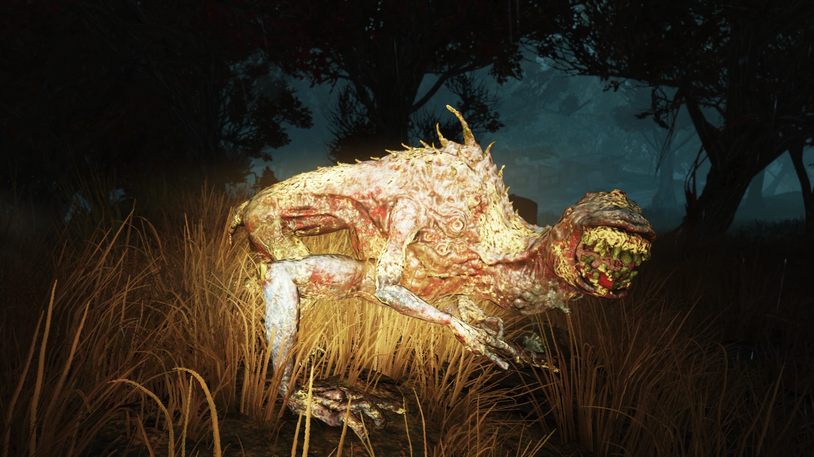
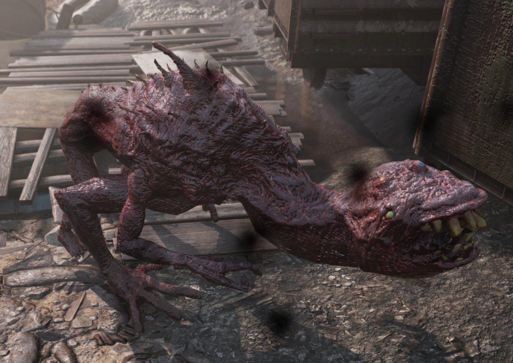
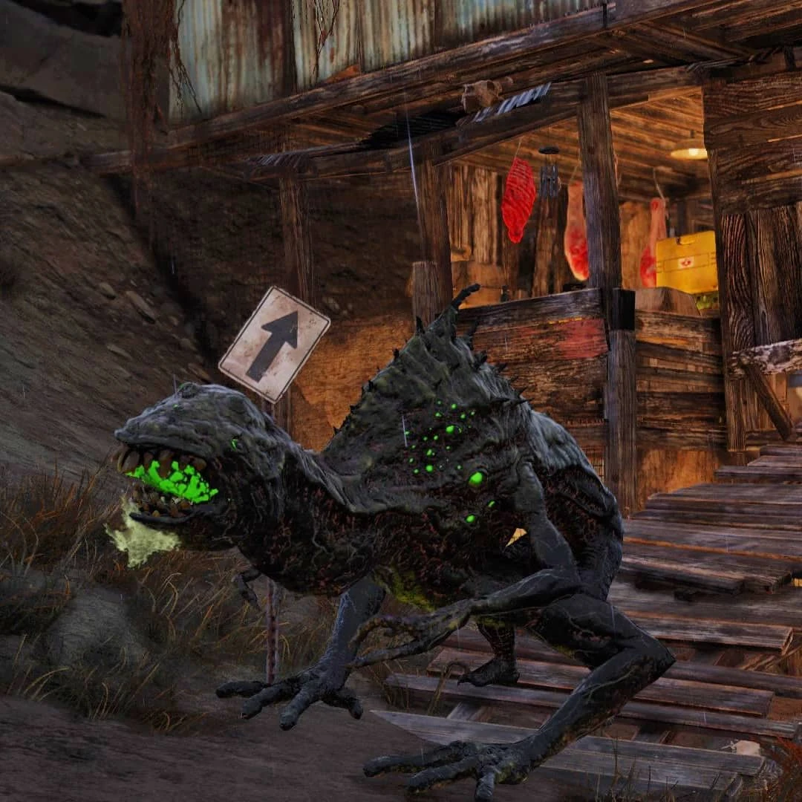
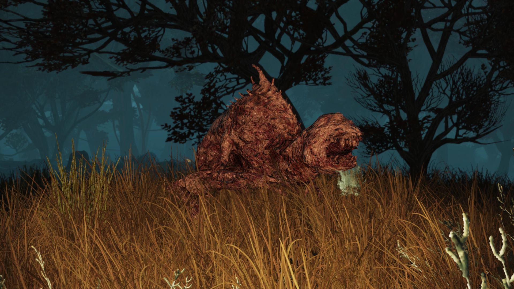
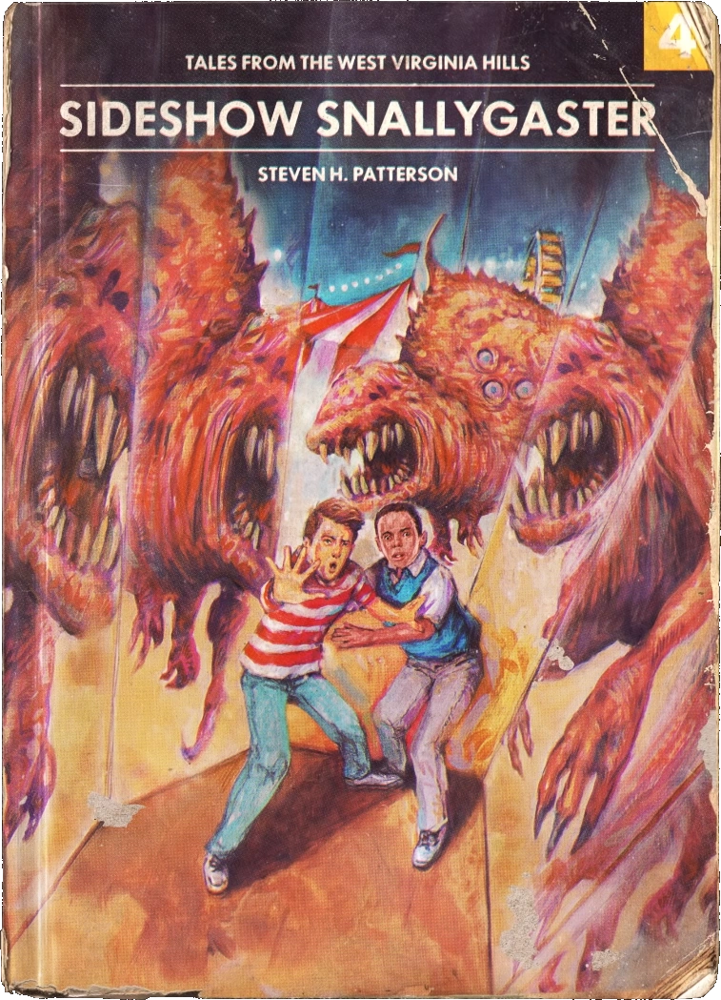
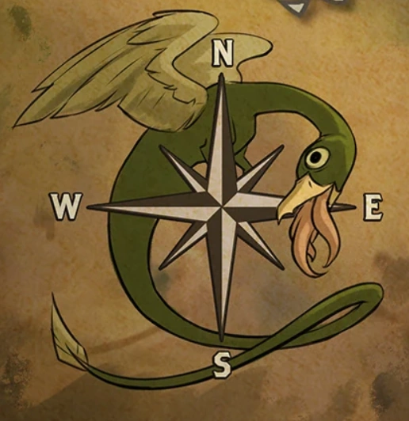
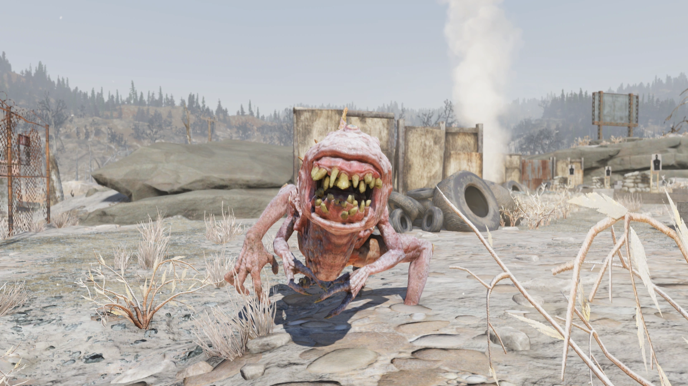
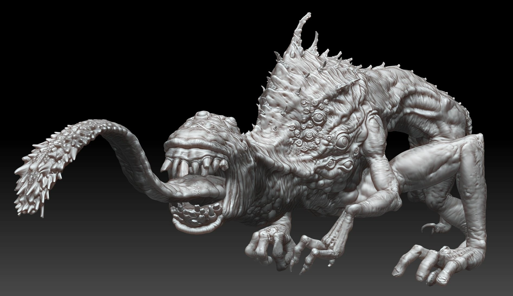
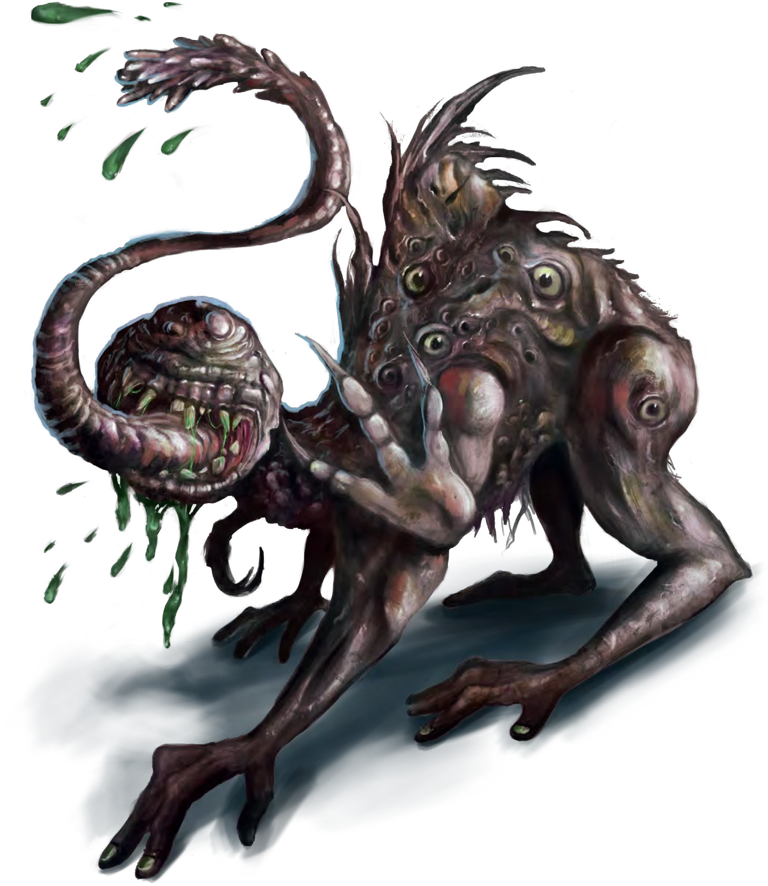
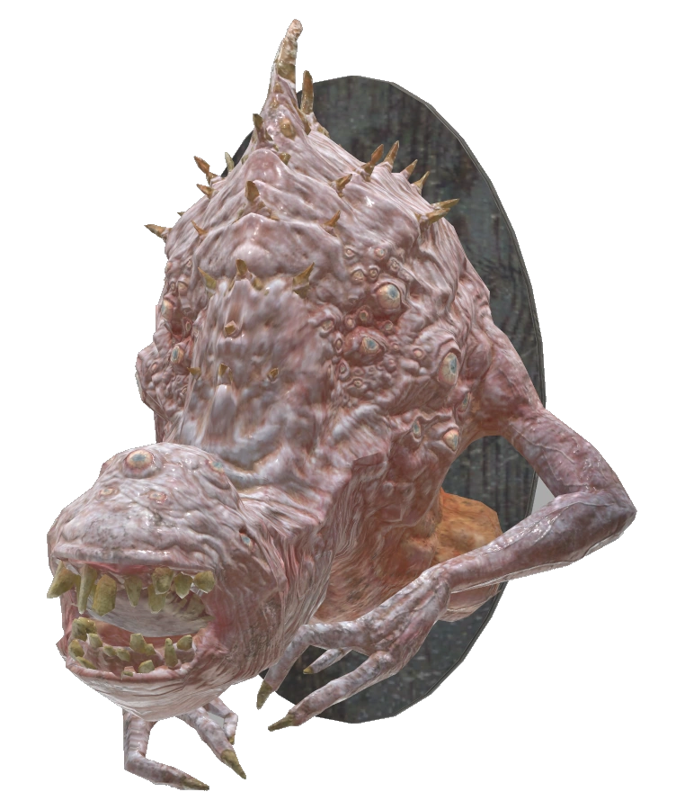
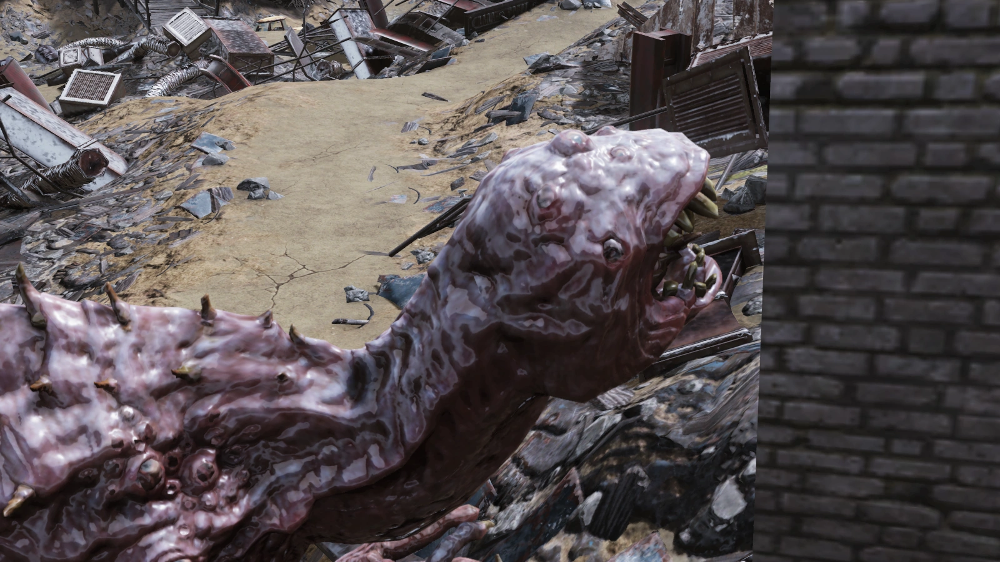
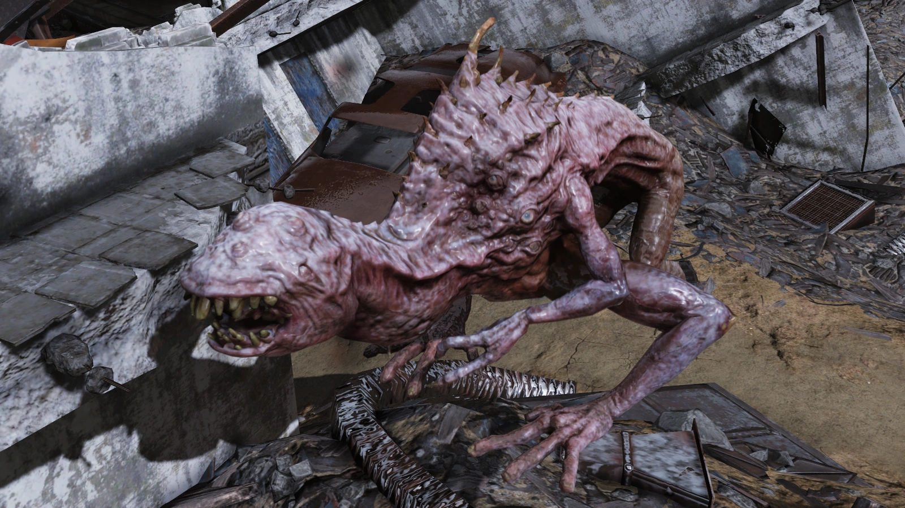
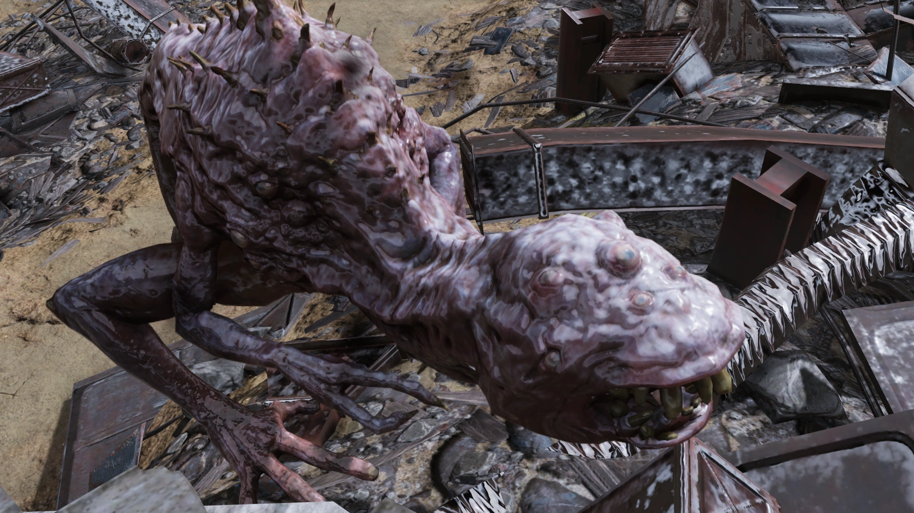
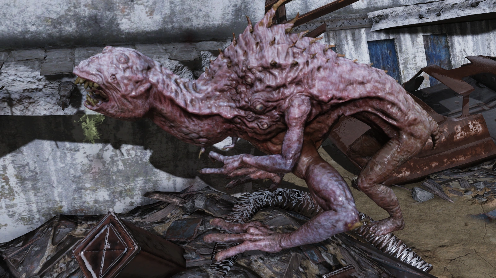
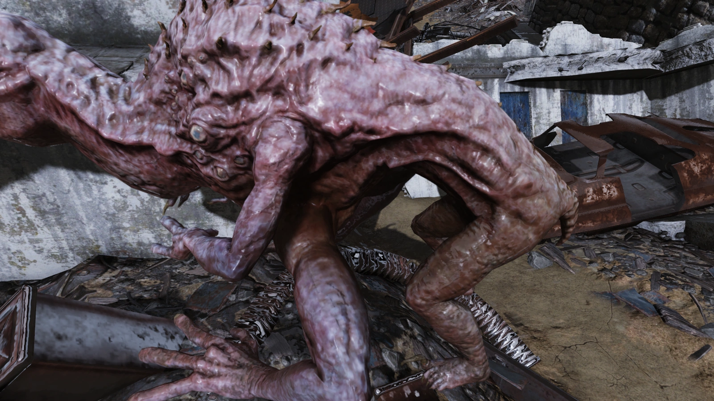
This article was created by translating and editing Snallygaster from Nukapedia: The Fallout Wiki.
Licensed under the Creative Commons Attribution-Share Alike License (CC BY-SA 3.0).
© Overseer Mohi's Terminal — Fallout Lore Archive
コミュニティ維持のため、寄付を受け付けております。
> COMMENTS_